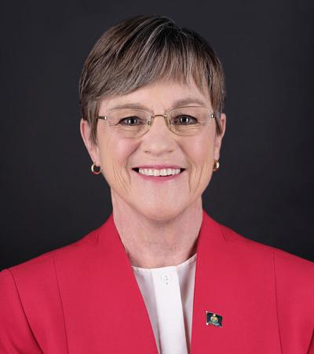

States Beginning to Open Back Up!
- Texas
Texas is set to reopen on May 1st. This date will start "phase one" of the states plan to slowly reopen. State governor Greg Abbott has issued a mandated warning about returning and how to do so safetly. During his latest press conference he stated that the state should reopen immediately so no more money would be lost and that people can get their jobs back and get off unemployment. He also stated that phase two has a set date but could be set to change, all depending on how we doing during phase one. With this in mind, Schools all around the state have scheduled to reopen for next semester and plans on having students on campus by August. Beaches on the coast have all reopend, but visitors must abide by the social distancing laws put in place. All things considered, this is a major step foward in returning back to life as we used to know it.

- Kansas
Luara Kelly, the current governor of Kansas, is set to release the statewide "safer-at-home" on May 4th. After this, the plan to reopen the state has been put into 3 phases as well, just like Texas. The first phase would start as soon as the stay at home order is lifted and would last, at least, until May 18th. Each phase is supposed to last exactly two weeks unless the dates are extended. If everything sticks to plan, Kansas would reopen completely, including international travel, by June 15th. This date would start phase three if dates for previous phases are not moved. That being said, the governor is looking to take some initiative in trying to open the state as soon as possible.